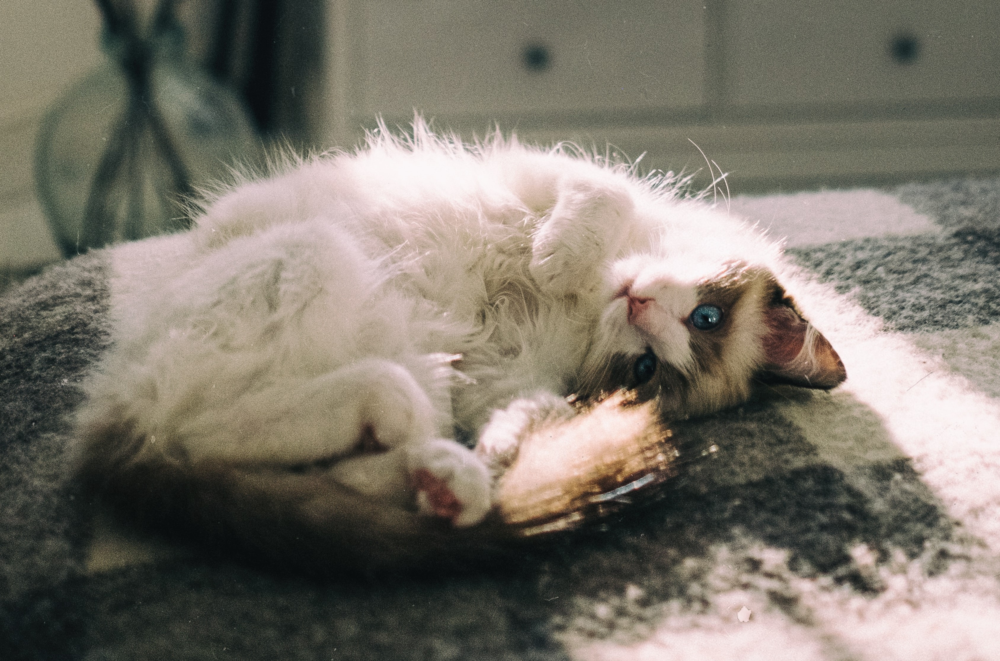
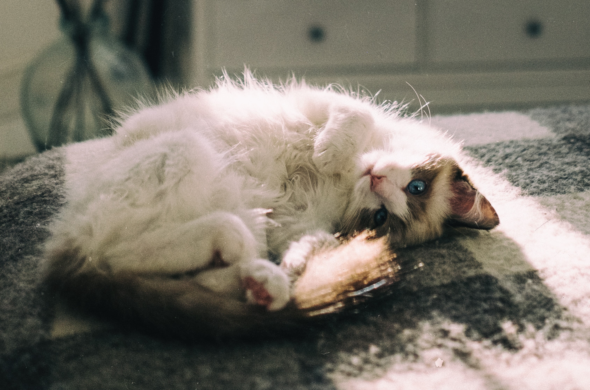

General Information
The Ragdoll cat breed is known for its serene and gentle disposition, earning it the reputation of being a "puppy cat" due to its affectionate and docile nature. With striking blue eyes, semi-longhair coats in various colors and patterns, and large, robust bodies, Ragdolls exude an air of elegance and charm. These cats are highly sociable and enjoy forming deep bonds with their human companions, often going limp when picked up, thus earning the name "Ragdoll" for their tendency to relax completely in their owners' arms.
Behavior
- Limpness Reflex: Ragdolls are known for their unique "limpness reflex," where they go completely relaxed and floppy when picked up, making them exceptionally easy to handle and cuddle.
- Dog-Like Affection: These cats display dog-like loyalty and affection, often following their owners around the house and even learning tricks like fetch.
- Quiet Nature: Ragdolls are typically quiet cats, with soft and melodic voices, making them ideal for those seeking a peaceful and tranquil living environment.
- Exceptional Lap Cats: They are renowned for their love of cuddling and lap-sitting, offering hours of comforting companionship to their owners.
- Playful but Gentle: Ragdolls have a playful side but are known for their gentle play style, making them great for households with children or other pets.
- Adaptability: They tend to adapt well to changes in their environment, making them suitable for families that may move or experience various lifestyle adjustments.
Colors and Shapes
Ragdoll cats come in a variety of colors and patterns, including colorpoint, mitted, and bi-color. Their striking blue eyes are a hallmark of the breed, creating a captivating contrast against their semi-longhair coats. With their large, muscular bodies, strong bone structure, and elegant tails, Ragdolls possess a regal and majestic appearance that complements their loving and gentle personalities, making them a true embodiment of both beauty and grace.
History
The history of the Ragdoll cat breed is a relatively recent tale, originating in the 1960s with a cat named Josephine. Josephine, a semi-feral white Persian-Angora mix, gave birth to a litter of kittens known for their endearing personalities and striking blue eyes. These kittens became the foundation of the Ragdoll breed, with selective breeding efforts focusing on maintaining their gentle nature and striking appearance. The breed's name, "Ragdoll," reflects their tendency to relax like a limp doll when held, capturing the essence of their loving and docile disposition. Since their inception, Ragdolls have become beloved pets worldwide, known for their affectionate nature and enchanting beauty.
 
